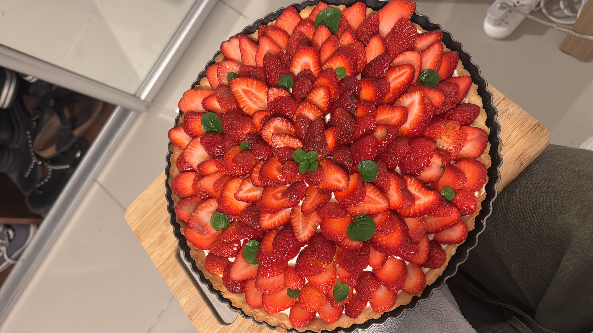

La cocina interpela más allá de la comida. Cuenta momentos, personas y recuerdos. Es por ello que quería recopilar mis recetas en un lugar que perdure en el tiempo y las generaciones. En este recetario comparto recetas caseras dulces, saladas, saludables y preparaciones básicas para disfrutar en familia.
Mi recetario casero: una recopilación de sabores y recuerdos.

¿Qué podés encontrar en nuestra página?
- Recetas dulces como tortas, tartas, cookies y delicias.
- Recetas saladas para ideas de almuerzos y cenas.
- Básicos de la cocina, como las masas más claves y rellenos multiusos.
- Un apartado para aquellos como mi mamá, que siempre buscan la alternativa saludable.
Recetas destacadas

Tarta de frutilla
Ver receta
Bondiola al horno
Ver receta
Budín de banana
Ver receta
Torta de chocolate
Ver recetaGalería de recetas